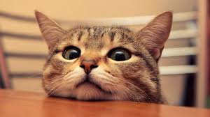

Cats are animals that are usually kept as pets by people. They are carnivorous and they drink milk. They usually sleep all day and don't do much at all. They are fast and agile and they can climb up alosmt anything with ease.
They are really adorable but when you mess with them they will scratch you will their claws and it really hurts.
